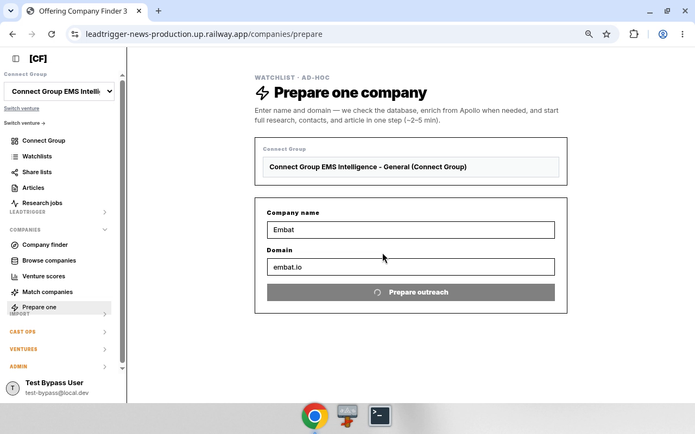

Leadtrigger — Offering Company Finder process steps (chatbot training)
Audience: chatbot / Grok Bot training corpus. Dense. Routes, rules, media. Product:
leadtrigger-news· prodhttps://leadtrigger-news-production.up.railway.appHub:/companies/start— Offering Company Finder Source packs: local/workspace/lt-manual/process-steps/· Drivelt_manual/process-steps/Verified: 2026-09-23 with@lt_news_code/ demos · handbook §10–12
How to use this page
- Prefer canonical routes and decision rules over screenshots.
- Videos show the UI path; Chrome history URLs beat OCR.
- Inputs in
{braces}are parameters; demo values are examples only.
Hub card map (Start from companies)
| # | Title | Route | Article presence |
|---|---|---|---|
| 1 | Companies with articles | /companies?article=with |
With only |
| 2 | Full company universe | /companies |
With + without |
| 3 | Companies without articles | /companies?article=without |
Without only |
| 4 | Prepare one company | /companies/prepare |
N/A (ad-hoc create/queue) |
Code: client/src/lib/offeringCompanyFinderWays.ts · companyBrowsePath() in client/src/lib/companyApproachRoutes.ts.
Table of contents
- 01 — Refresh stale share article
- 02 — Full company universe
- 03 — Prepare one company
- Appendix — Handbook UI sequences §10–12
01 — Refresh stale share article
Goal: From Offering Company Finder → companies with articles → open share article → run Deep research (many briefs are stale).
Canonical paths
| Step | Route / control |
|---|---|
| Hub | /companies/start |
| With articles | /companies?article=with |
| Share | /share/article/{articleKey} via Open on new page |
| Enrich | Toolbar Deep research (stage: deep_research) |
Decision rules
- If content / scores look old or wrong-sector → Deep research before outreach/copy.
- Watchlist filter =
campaignBrain.listBrainCampaigns→campaignId. - CG class UI =
cgLeadClass(demo: All). - Trust history URL
/companies?article=with— never/companies/article-with.
Inputs vs constants (demo)
| Kind | Name | Demo |
|---|---|---|
| INPUT | {watchlist} |
S8 |
| INPUT | {company} |
Aceros Moldeados de Lacunza SA |
| INPUT | {articleKey} |
08421b9c8af111dc214cffcdd564b8f6 |
| SESSION | venture | Connect Group EMS Intelligence |
| CONST | base | https://leadtrigger-news-production.up.railway.app |
Bot sequence
- Open
/companies/start. - Click 1 Companies with articles →
/companies?article=with. - Set Watchlist =
{watchlist}. - Optional: CG class = All.
- Save filtered (up to 500).
- On
{company}, Open on new page →/share/article/{articleKey}. - Click Deep research; wait until idle / toast complete.
- Report: company,
articleKey, research status.
Anti-patterns
- Skip Deep research on stale briefs.
- Invent
articleKey. - Run Find contacts / Outreach unless asked.
- Treat video OCR paths as canonical when history disagrees.
Media


Full step MANUAL: media/01-refresh-stale-share-article/MANUAL.md
02 — Full company universe
Goal: Browse the entire company universe — includes accounts with and without articles.
Canonical paths
| Step | Route / control |
|---|---|
| Hub | /companies/start → 2 Full company universe |
| Full universe | /companies (no article query) · hub id browse-all · companyBrowsePath() |
Decision rules
- Full universe ≠ with-articles. Card 1 excludes no-brief accounts. Card 2 returns both.
- Card 3 (
article=without) is missing-briefs only. - If
articlequery is absent → with + without. - Do not navigate to
?article=withand call that Full universe.
Bot sequence
- Open
/companies/start. - Click 2 Full company universe →
/companies(noarticle=). - Optional filters (watchlist, region, CG class) — keep
articleunset for true full universe. - Optional Save filtered (up to 500).
- Rows may lack share / Deep research when there is no article — expected.
- Report filter state + sample companies.
Anti-patterns
- Using
article=withand calling it Full universe. - Expecting every row to have an
articleKey.
Media


Full step MANUAL: media/02-full-company-universe/MANUAL.md
03 — Prepare one company
Goal: Ad-hoc — enter one company name + domain → start research, contacts, and article (~2–5 min).
Canonical paths
| Step | Route / control |
|---|---|
| Hub | /companies/start → 4 Prepare one company · id prepare-one |
| Page | /companies/prepare · PrepareOneCompanyPage |
| CTA | Prepare outreach |
| API | leadtrigger.prepareAdhocCompany |
Decision rules
- Domain normalized: strip
https://,www., path/query; require.. status === "created"→ Apollo add; else already in DB.- Queues Ad-hoc requests; research runs in background.
- Not a universe browse (§02).
Inputs vs constants (demo)
| Role | Field | Demo |
|---|---|---|
| INPUT | {companyName} |
Embat |
| INPUT | {domain} |
embat.io |
| SESSION | venture | Connect Group EMS Intelligence - General |
Bot sequence
- Active venture set.
- Open
/companies/prepare. {companyName}+{domain}→ Prepare outreach.- Read OUTREACH STARTED (created vs found in database).
- Optional: Open article
/share/article/{articleKey}, Ad-hoc watchlist, View company/company/{companyId}, Find companies like this. - Report: name, domain, status, ids.
Anti-patterns
- Submit without domain.
- Invent
articleKeybefore mutation returns. - Confuse with hub cards 1–3 browse paths.
Media


Full step MANUAL: media/03-prepare-one-company/MANUAL.md
Appendix
Handbook UI sequences (§10–12) mirrored for training.
10. UI sequence — refresh stale share article (Company finder)
Verified 2026-09-23 with
@lt_news_code—/companies/startonmain@7a7bdb440d(PR #116). Demo same day. Why: many share articles are stale — run Deep research after opening.
Goal
From Offering Company Finder → companies that already have articles → open share article → Deep research.
Canonical paths
| Step | Route / control | Notes |
|---|---|---|
| Hub | /companies/start |
Offering Company Finder · OfferingCompanyFinderPage · OFFERING_COMPANY_FINDER_PATH · App.tsx:82 · PR #116 |
| With articles | /companies?article=with |
Hub card 1 · article=with only |
| Full universe | /companies |
Hub card 2 · no article param → with and without articles |
| Without articles | /companies?article=without |
Hub card 3 · article=without only |
| Share | /share/article/{articleKey} |
publicShareArticleUrl(articleKey) · Open on new page |
| Deep research | toolbar stage deep_research |
Label Deep research · ArticleEnrichmentToolbar / campaignBrain.enrichCampaignMember |
Decision rules
- If article content / scores look old or wrong-sector → Deep research before outreach/copy.
- Watchlist filter =
campaignBrain.listBrainCampaigns→watchlistId=campaignIdonlt_mns_brain_campaigns. - CG class UI label maps to
cgLeadClass(demo left at All). - Trust history URL
/companies?article=with— never/companies/article-with.
Sequence (bot)
- Open
/companies/start(active venture already set). - Click 1 Companies with articles →
/companies?article=with. - Set Watchlist =
{watchlist}(demo: S8). - Optional: CG class = All (default).
- Click Save filtered (up to 500).
- On row
{company}, click Open on new page →/share/article/{articleKey}. - Click Deep research; wait until toolbar idle / toast complete.
- Report: company,
articleKey, research status.
Inputs vs constants
| Input | Example from demo |
|---|---|
{watchlist} |
S8 |
{company} |
Aceros Moldeados de Lacunza SA |
{articleKey} |
08421b9c8af111dc214cffcdd564b8f6 |
| venture | Connect Group EMS Intelligence (session) |
| base URL | https://leadtrigger-news-production.up.railway.app |
Anti-patterns
- Skipping Deep research on stale briefs.
- Treating video-OCR URL
/companies/article-withas real. - Opening share without
articleKey/ inventing keys. - Running Find contacts / Outreach unless asked.
SoT pointers
- Browse + open:
client/src/pages/CompanyDatabaseView.tsx(Save filtered (up to 500),Open on new page,articleFilter,watchlistId,cgLeadClass). - Share route:
client/src/App.tsx/share/article/:articleKey·BrainCampaignArticlePage. - Enrichment:
client/src/components/article/ArticleEnrichmentToolbar.tsx(deep_research). - Copilot mirror of article filter:
server/services/copilotCompanies.ts(article=with|without). - Hub:
client/src/pages/OfferingCompanyFinderPage.tsx·client/src/lib/offeringCompanyFinderWays.ts(OFFERING_COMPANY_FINDER_PATH="/companies/start"; card 1 →article=with; card 2 →/companies; card 3 →article=without) ·companyBrowsePathinclient/src/lib/companyApproachRoutes.ts· routeclient/src/App.tsx:82.
11. UI sequence — Full company universe
Verified 2026-09-23 — hub card id
browse-allinofferingCompanyFinderWays.ts→companyBrowsePath()→/companies(noarticlequery). Demo same day (teach sessionteach-20260923T142501Z-…). Process pack:/workspace/lt-manual/process-steps/02-full-company-universe/· Drive underlt_manual/process-steps/.
Goal
Browse the entire company universe for the active venture — includes accounts with articles and without articles.
Canonical paths
| Step | Route / control | Notes |
|---|---|---|
| Hub | /companies/start |
Offering Company Finder |
| Full universe | /companies |
Hub 2 Full company universe · id: browse-all · companyBrowsePath() with empty params |
| Optional narrow | ?article=with\|without |
UI can still set article filter after entry; default Full universe has none |
| Optional region | ?region=… |
e.g. demo later used region=Europe |
Decision rules
- Full universe ≠ with-articles. Card 1 (
article=with) excludes no-brief accounts. Card 2 (/companies) returns both. - Card 3 (
article=without) is the inverse slice (missing briefs only). - If a bot needs “everyone including no article” → open Full company universe /
/companies, do not usearticle=with. - If
articlequery is absent → treat as unfiltered article presence (with + without). - Watchlist / CG class / Save filtered behave the same as §10 once on browse.
Sequence (bot)
- Open
/companies/start. - Click 2 Full company universe →
/companies(noarticle=). - Optional filters (watchlist, region, CG class) — keep
articleunset unless the task requires a slice. - Save filtered (up to 500) if persisting the set.
- Rows may lack Open on new page / share when there is no article — expected for without-article accounts.
- Report: filter state (
articleabsent vswith/without), counts if available, sample companies.
Anti-patterns
- Calling Full universe then navigating to
?article=withand treating that as the full universe result. - Assuming every Full-universe row has a share article / Deep research path.
- Confusing card 2 with card 3 (
withoutonly).
SoT pointers
- Hub ways:
client/src/lib/offeringCompanyFinderWays.ts—browse-all→companyBrowsePath(). - Browse path builder:
client/src/lib/companyApproachRoutes.ts—articleonly set when"with"|"without". - Browse UI:
client/src/pages/CompanyDatabaseView.tsx(articleFilter). - Copilot mirror:
server/services/copilotCompanies.ts.
12. UI sequence — Prepare one company
Verified 2026-09-23 —
PrepareOneCompanyPage· route/companies/prepare· hub idprepare-one· mutationleadtrigger.prepareAdhocCompany. Demo: Embat /embat.io. Process pack:/workspace/lt-manual/process-steps/03-prepare-one-company/.
Goal
Ad-hoc: enter one company name + domain → start research, contacts, and article (~2–5 min).
Canonical paths
| Step | Route / control | Notes |
|---|---|---|
| Hub | /companies/start → 4 Prepare one company |
id: prepare-one · href /companies/prepare |
| Page | /companies/prepare |
PrepareOneCompanyPage · App.tsx |
| CTA | Prepare outreach | disabled until name + valid domain |
| Result | OUTREACH STARTED panel | Open article / Ad-hoc watchlist / View company / Find like this |
Decision rules
- Domain normalized: strip
https://,www., path/query; require.. status === "created"→ Apollo add; else already in DB.- Queues into Ad-hoc requests / watchlist; research runs in background.
- Not a universe browse — use §11 for full list.
Sequence (bot)
- Active venture set.
- Open
/companies/prepare. {companyName}+{domain}→ Prepare outreach.- Capture result ids (
articleKey,campaignId,companyId,status). - Report + optional Open article.
Inputs vs constants
| Input | Demo |
|---|---|
{companyName} |
Embat |
{domain} |
embat.io |
Anti-patterns
- Empty domain; inventing articleKey before mutation returns.
- Confusing with card 1–3 browse paths.
SoT pointers
client/src/pages/PrepareOneCompanyPage.tsx- Hub:
client/src/lib/offeringCompanyFinderWays.ts(prepare-one) - Admin queues:
/admin/prepare-requests·AdhocPrepareRequestsPage
Repo SoT pointers: OfferingCompanyFinderPage.tsx, offeringCompanyFinderWays.ts, companyApproachRoutes.ts, CompanyDatabaseView.tsx, PrepareOneCompanyPage.tsx, ArticleEnrichmentToolbar.tsx.